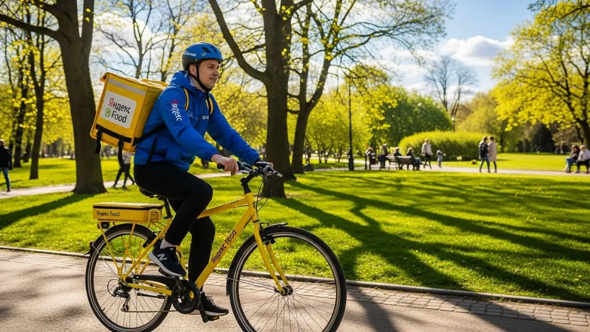
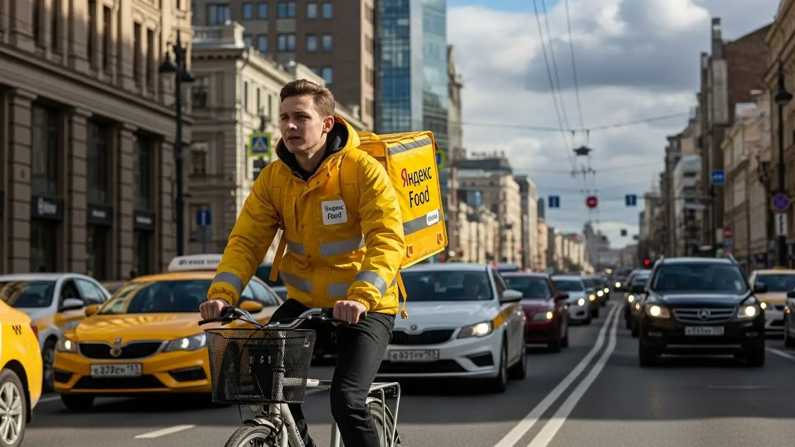
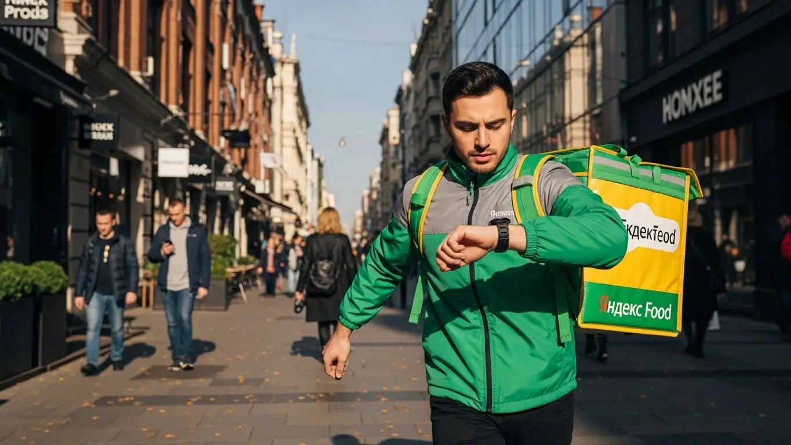
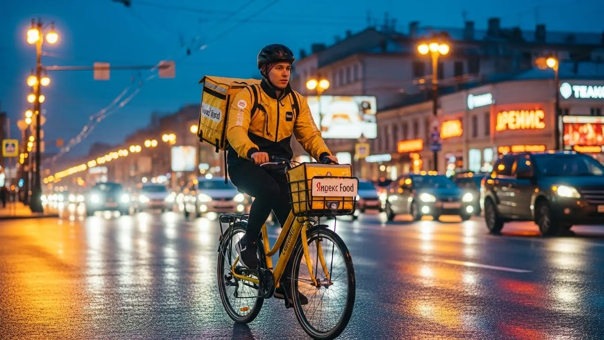
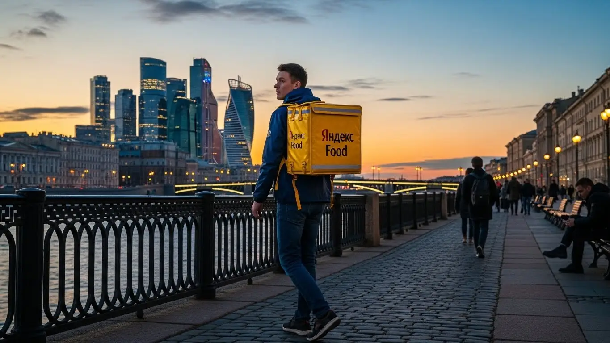

Доход курьера Яндекс Еда в Нефтекамске в 2025-2026: разбор

- Работа курьером Яндекс Еды в Нефтекамске: для кого эта вакансия и что вы получите
- Сколько вы будете зарабатывать курьером в Нефтекамске: калькулятор дохода и разбор выплат
- Реальный заработок курьера в Нефтекамске: смены и месячный доход
- График работы и форматы занятости
- Требования к кандидату и документы
- Самозанятость, налоги и юридическая чистота
- Пошаговое оформление и первый выход на линию в Нефтекамске
- Пешком, на вело или на авто: что выгоднее в Нефтекамске
- Районы, маршруты и «топовые» зоны заказов в Нефтекамске
- Безопасность, страховка, штрафы и оплата простоя
- Плюсы и возможные минусы работы курьером в Нефтекамске
- Реальные истории и отзывы курьеров из Нефтекамска
- Ответы на главные вопросы о работе курьером Яндекс Еды в Нефтекамске
- Короткие ответы на главные вопросы
- Заключение: ваш следующий шаг в Нефтекамске
Все города
Думаешь, работа курьером в Нефтекамске — это просто сел на велик и поехал рубить бабло? А потом оказывается, что доход едва покрывает ремонт, штрафы съедают четверть заработка, а стоять в пробке на Комсомольском проспекте приходится дольше, чем ехать до клиента. Я здесь, чтобы рассказать, как на самом деле устроена работа курьером Яндекс Еды в Нефтекамске, а не в какой-нибудь Москве, где всё по-другому.
Поверь, 9 из 10 новичков у нас в городе сдуваются в первый же месяц. Не потому что работа плохая, а потому что никто им не объяснил «внутрянку». Они не считают реальные расходы на бензин или амортизацию, не понимают, как работает приоритет и почему в одном районе заказов густо, а в другом — пусто. В итоге катаются впустую, теряя и время, и деньги, совершая одни и те же ошибки.
В этом гиде мы всё разложим по полкам. Мы честно посчитаем, сколько реально можно заработать пешком, на велосипеде или авто с учётом наших, нефтекамских, реалий. Разберём, в каких районах самый «жир» по заказам, а куда лучше не соваться в час пик. Выясним, как погода — от летнего зноя до зимней каши на дорогах — влияет на доход. И главное — я покажу на примерах, за что прилетают штрафы и как их не получать. А если тебе нужна только краткая выжимка и форма для заявки, то вся основная информация про работу курьером Яндекс Еда в Нефтекамске собрана на отдельной странице.
Меня зовут Алексей. Я сам не один год откатал с жёлтой сумкой по Нефтекамску, а сейчас держу небольшой таксопарк-партнёр. Так что всю эту кухню я знаю с двух сторон — и как курьер, и как тот, кто помогает ребятам выходить на линию. Здесь не будет рекламной лапши про «доход до 100500 тысяч». Только мясо, только реальный опыт и советы, которые сэкономят тебе нервы и деньги.
Но перед тем, как мы копнём глубже, давай быстро пробежимся по верхам. Считай это навигатором по статье, чтобы ты сразу понял, где искать ответы на свои главные вопросы.
Что ты точно узнаешь из этого разбора
В этой статье ты ТОЧНО узнаешь:
- Сколько реально можно заработать в Нефтекамске за смену пешком, на велосипеде и на авто, и от чего это зависит?
- В каких районах Нефтекамска больше всего заказов и как ловить «фиолетовые зоны» с повышенной оплатой?
- Что выгоднее в Нефтекамске — работать пешком в центре, на велосипеде в спальниках или на авто по всему городу?
- Как устроена самозанятость для курьера: сколько платить налогов и сложно ли это оформить?
- За что на самом деле могут понизить рейтинг или заблокировать, и как этого избежать?
- Что такое оплата простоя и как сервис платит тебе, даже если заказов нет?
А если тебе некогда читать всю статью — переходи сразу к заключению, где ты найдёшь короткие ответы на все эти вопросы и указания, в каких разделах искать подробности.
А вот ключевые цифры по Нефтекамску в одной картинке, чтобы ты сразу понял порядок сумм.
Работа курьером в Нефтекамске: ключевые цифры
Работа курьером Яндекс Еды в Нефтекамске: для кого эта вакансия и что вы получите
Кому подойдёт эта работа в Нефтекамске
Скажу честно: эта работа не для всех, но для многих она — настоящая находка. В первую очередь, это идеальный вариант для студентов, особенно из нашего филиала БашГУ или нефтяного колледжа. Можно легко совмещать с парами, выходя на линию на 3–4 часа вечером или в выходные, чтобы были деньги на свои расходы. Также это отличный старт для тех, у кого нет опыта работы. Здесь не спросят диплом и не потребуют резюме на три страницы — главное твоё желание работать и наличие смартфона.
Если у тебя уже есть основная работа, но нужны дополнительные деньги, — это хороший вариант подработки. График полностью свободный, ты сам решаешь, когда и на сколько выходить. Для водителей, у которых простаивает личный автомобиль, это возможность стать курьером на своем авто и превратить его в актив, который приносит доход с ежедневными выплатами. В общем, если тебе важны гибкость, быстрые деньги и отсутствие начальника над душой, то эта вакансия в Нефтекамске тебе точно подойдёт.

Главные преимущества для жителей районов Центральный, Восточный, Касево
Одно из главных удобств — возможность работать прямо у себя в районе. Не нужно тратить час на дорогу до работы и обратно. Живёшь, например, в Центральном районе, рядом с Комсомольским проспектом — можешь брать заказы из местных кафе и доставлять их по соседним домам. Это особенно удобно для пеших курьеров и велокурьеров.
Для жителей микрорайона Восточный тоже полно работы: там много новостроек, а значит, и заказов из магазинов и ресторанов. Не придётся ехать в центр, чтобы найти плотный поток заказов. Даже если ты живёшь в Касево, можно начинать смену оттуда, доставляя заказы по своему же району. Система «Яндекс Про» подбирает заказы так, чтобы минимизировать холостой пробег и держать тебя в пределах выбранной зоны.
Краткое обещание по доходу и условиям
Теперь о главном — о деньгах. В Нефтекамске, работая курьером, можно стабильно зарабатывать. Если выходить на смены по 4–5 часов в день, как на подработку, вполне реально делать 1500–2000 рублей. При полной занятости, то есть 8–10 часов на линии, активные ребята, особенно на авто, доводят дневной доход до 3500–4000 рублей. В месяц при полной занятости выходит от 50 до 80 тысяч рублей.
Что по условиям? Всё просто и прозрачно. Во-первых, начать можно без опыта — всему научат на коротком онлайн-инструктаже. Во-вторых, у тебя будет свободный график, который ты сам планируешь через приложение. И самое приятное — выплаты ежедневные. Отработал смену — получил деньги на карту. Никаких ожиданий зарплаты неделями.
Сколько вы будете зарабатывать курьером в Нефтекамске: калькулятор дохода и разбор выплат
Из чего складывается доход курьера
Твой заработок — это не просто фиксированная ставка. Он складывается из нескольких частей, и важно понимать каждую из них. Во-первых, это базовая оплата за выполнение заказа. Во-вторых, к ней добавляется плата за расстояние — чем дальше везти, тем больше денег. В часы пик, плохую погоду или в зонах, где курьеров не хватает, включаются повышающие коэффициенты. Карта в приложении «Яндекс Про» окрашивается в яркие цвета, и в этих зонах стоимость каждого заказа может умножаться в 1,5, 2, а то и в 3 раза.
Кроме того, есть бонусы за выполнение определённого количества заказов в день или неделю. Клиенты часто оставляют чаевые — они полностью твои. Но важное преимущество сервисов Яндекса — это оплата простоя. Если ты вышел на плановый слот, а заказов мало, сервис всё равно начислит минимальную гарантированную сумму. Иногда также действует компенсация проезда на общественном транспорте, если нужно добраться до дальней точки.
Как пользоваться калькулятором дохода
Чтобы прикинуть свой потенциальный заработок, не нужно гадать. На сайте есть специальный калькулятор. Пользоваться им просто: сначала выбираешь свой город — Нефтекамск. Затем указываешь, как планируешь доставлять: как пеший курьер, на велосипеде или на личном автомобиле.
Далее выставляешь, сколько часов в день и сколько дней в неделю готов работать. Например, 4 часа 5 дней в неделю. Калькулятор на основе средних данных по городу покажет тебе примерный диапазон твоего дохода за день и за месяц. Это не стопроцентная гарантия, но очень точный ориентир, который поможет понять, на что можно рассчитывать.
Прикинь свой доход курьером в Нефтекамске
8 часов
5 дней
* Расчёт основан на средней ставке для Нефтекамска. Реальный доход зависит от спроса, бонусов, чаевых и вашего графика.
Это хороший ориентир, а чтобы увидеть самые актуальные условия, требования и сразу подать заявку, загляни на страницу про работу курьером Яндекс Еда в твоём городе — там всё собрано в одном месте.
Примеры расчёта для пешего, вело- и авто‑курьера в Нефтекамске
Давай разберём на конкретных примерах.
- Пеший курьер. Студент выходит на 4 часа в обеденный пик (с 12:00 до 16:00) в центре, в районе ТЦ «Великан». Заказы короткие, в радиусе 1–2 км. За смену он успевает сделать 8–10 доставок. С учётом бонусов и возможных чаевых его заработок за такую смену составит примерно 1200–1600 рублей.
- Велокурьер. Парень работает по 6 часов вечером, курсируя между спальными районами в районе улиц Ленина и Социалистической. На велосипеде он передвигается быстрее, чем пеший, и может брать заказы на 3–4 км. За смену он выполняет 12–15 заказов, что приносит ему около 2000–2500 рублей.
- Автокурьер. Мужчина, работающий на своем авто, выходит на полный день, 8–9 часов. Он берёт заказы по всему городу, включая дальние доставки в промзону или даже в пригородные посёлки. В плохую погоду его доход резко возрастает за счёт коэффициентов. За день он может заработать 3500–5000 рублей, особенно если захватывает вечерние часы и выходные.
Реальный заработок курьера в Нефтекамске: смены и месячный доход
Теорию разобрали, теперь давай к реальным цифрам. Сколько на самом деле выходит в месяц в Нефтекамске, если работать с умом? Цифры в рекламе часто обещают золотые горы, но я расскажу, как обстоят дела на практике. Твой доход сильно зависит от тебя: как, когда и на чём ты работаешь. Но если подойти к делу с головой, заработок будет стабильным и предсказуемым.
Два курьера, отработавшие одинаковые 8 часов, могут получить совершенно разную сумму. Один просто катался по городу, а второй ловил выгодные заказы в зонах с высоким спросом. Например, один знакомый водитель-курьер в прошлую пятницу за 4 часа вечерней смены сделал около 2500 рублей. Погода была плохая, шёл дождь со снегом, и коэффициенты в центре взлетели. Он просто встал в районе ТЦ «Великан», где много ресторанов, и развозил заказы по ближайшим микрорайонам. За счёт высокого спроса и щедрых чаевых от людей, которые не хотели выходить из дома, он и заработал больше среднего. Это и есть умный подход.
В целом, заработок курьера в Нефтекамске — это не лотерея, а результат твоей стратегии. Важно понимать, где и когда больше всего заказов, и не лениться выходить на линию, когда другие сидят дома. Дальше разберём конкретные цифры и способы на них влиять.

Диапазон дохода для подработки и полной занятости
Давай по-честному, без завышенных ожиданий. Вот реальные вилки дохода в Нефтекамске, на которые можно ориентироваться.
Если ты ищешь подработку на 2–4 часа в день, например, после основной работы или учёбы, цифры будут примерно такие:
- Пеший курьер: За короткую смену в 3-4 часа можно заработать 600–900 рублей. В месяц, выходя 4–5 раз в неделю, это выливается в 12 000 – 18 000 рублей. Неплохая прибавка к стипендии или зарплате.
- Велокурьер: На велосипеде ты быстрее, поэтому за то же время успеешь сделать больше заказов. Рассчитывай на 800–1200 рублей за смену. В месяц это уже 16 000 – 24 000 рублей.
- Курьер на автомобиле: На машине доход самый высокий, но не забывай вычитать расходы на бензин. За 3-4 часа чистыми (уже за вычетом топлива) выходит 1000–1500 рублей. В месяц это может быть 20 000 – 30 000 рублей дополнительного дохода.
При полной занятости, когда ты работаешь по 8–10 часов в день, доход совсем другой. Это уже полноценная работа с хорошей зарплатой по меркам Нефтекамска.
- Пеший курьер: За полный день можно сделать 1500–2200 рублей. В месяц при графике 5/2 это составит 35 000 – 45 000 рублей.
- Велокурьер: Дневной заработок будет в районе 2000–2800 рублей. Месячный доход — 45 000 – 60 000 рублей.
- Автокурьер: За смену 8-10 часов чистыми выходит 2500–4000 рублей. В месяц можно стабильно зарабатывать 60 000 – 85 000 рублей и даже больше, если работать в выходные и пиковые часы.
Как район, время суток и погода влияют на доход
Твой заработок напрямую зависит от трёх вещей: где ты, когда ты и что за окном. Если понять эту механику, будешь всегда с заказами и деньгами.
Во-первых, район. В Нефтекамске самые «рыбные» места — это центр города, особенно улицы Ленина, Социалистическая и Комсомольский проспект. Здесь сосредоточены кафе, рестораны и магазины. В обеденное время (с 12:00 до 15:00) и вечером (с 18:00 до 22:00) тут всегда высокий спрос. Также хорошо себя показывают крупные спальные районы, например, Касево или район новостроек, — вечером оттуда идёт вал заказов на ужин.
Во-вторых, время. Пиковые часы — твой главный инструмент для увеличения дохода. Это обед, ужин и все выходные, особенно вечера пятницы и субботы. В это время в приложении «Яндекс Про» появляются зоны с повышенным спросом, которые подсвечиваются фиолетовым цветом. Заказы из таких зон оплачиваются с повышающим коэффициентом, то есть ты можешь получить в 1.5-2 раза больше за ту же самую доставку.
В-третьих, погода. Дождь, снегопад, сильный мороз или жара — это твой друг. Большинство людей предпочитают остаться дома, а количество желающих заказать еду или продукты резко возрастает. Курьеров на линии становится меньше, а заказов — больше. В результате коэффициенты взлетают до небес. К тому же, в плохую погоду клиенты чаще оставляют хорошие чаевые — из благодарности, что ты доставил их заказ, пока они сидели в тепле и уюте.
Советы по увеличению заработка от опытных курьеров
Чтобы зарабатывать больше, не обязательно работать сутками. Достаточно работать головой. Вот несколько проверенных советов от меня и моих ребят.
Выбирай правильные слоты. Если работаешь по расписанию, старайся брать плановые слоты на вечернее время (с 18:00 до 23:00) и на выходные. В это время заказов всегда больше, и часто действуют минимальные гарантированные ставки. Даже если заказов будет мало, ты получишь не меньше определённой суммы. Это отличная страховка для новичков.
Следи за картой спроса в «Яндекс Про». Не стой на месте в ожидании заказа. Открывай приложение и смотри, где сейчас «горят» фиолетовые зоны. Если ты находишься в 10-15 минутах езды от такой зоны — смело двигайся туда. Несколько минут в пути окупятся более дорогими заказами. Не нужно кататься по всему городу, выбери 2-3 перспективных района и перемещайся между ними.
Сочетай разные виды транспорта, если есть возможность. Это высший пилотаж. Например, в час пик в центре Нефтекамска на машине можно застрять в пробке. В это время выгоднее работать на велосипеде: быстро, маневренно, нет проблем с парковкой. А вот для дальних заказов в пригородные посёлки, вроде Энергетика или Амзи, или для доставки тяжёлых посылок из магазинов лучше использовать автомобиль. Так ты будешь максимально эффективен в любой ситуации.
График работы и форматы занятости
Одно из главных преимуществ этой работы — гибкость. Ты сам решаешь, когда и сколько тебе работать. Никаких начальников, стоящих над душой, и строгого графика с 9 до 6. Это идеальный вариант для тех, кто ценит свободный график и хочет совмещать работу с другими важными делами, будь то учёба, основная работа или семья.
Ты можешь выходить на линию на пару часов в день, чтобы подзаработать на карманные расходы, или работать полную смену и сделать доставку своим основным источником дохода. Всё управление графиком происходит через приложение «Яндекс Про»: захотел поработать — нажал кнопку и принимаешь заказы. Устал или появились дела — ушёл с линии. Такая свобода требует самодисциплины, но даёт полный контроль над своей жизнью и заработком.
Знаю одного парня, бывшего офисного сотрудника. Устал от рутины и жёсткого графика. Сейчас он автокурьер на полной занятости. Говорит, что зарабатывает не меньше, а свободного времени стало больше. Он сам планирует свои выходные, может днём съездить по делам, а рабочие часы сместить на более прибыльный вечер. Это и есть главный плюс — ты подстраиваешь работу под свою жизнь, а не наоборот.
В итоге, неважно, студент ты, работающий человек или просто ищешь основной доход — в Яндекс Еде можно найти подходящий для себя формат. Главное — правильно спланировать своё время и использовать возможности сервиса.
Подработка после учёбы или основной работы
Совмещать доставку с чем-то ещё — проще простого. Это самый популярный сценарий для большинства новичков, которые ищут подработку. Вот пара реальных примеров, как это выглядит в Нефтекамске.
Пример первый: студент Нефтекамского филиала БашГУ. Учится днём, а вечером ему нужны деньги на развлечения и личные расходы. Он выходит на линию на велосипеде 4-5 раз в неделю примерно с 18:00 до 22:00. Катается по центру и ближайшим микрорайонам. За вечер спокойно делает 1000-1200 рублей. В месяц у него набегает около 20 000 рублей, что для студента очень хороший дополнительный доход, который не мешает учёбе.
Пример второй: мужчина, работающий на заводе по сменному графику. У него есть свободные дни посреди недели и выходные. Он выходит на линию на своей машине, когда ему удобно. Иногда это 2-3 часа вечером после смены, чтобы развезти ужины, иногда — полный день в свой выходной. Он не гонится за рекордами, работает в своё удовольствие. Такой формат приносит ему дополнительные 25 000 – 35 000 рублей в месяц, которые он тратит на семью и хобби.
Полная занятость: как выглядит типичный день курьера
Если ты решил сделать доставку основной работой, твой день будет более структурированным, но всё равно гибким. Вот как обычно выглядит день курьера на полной занятости в Нефтекамске.
Утро начинается не слишком рано, около 10:00–11:00. Курьер выходит на линию, проверяет карту спроса в «Яндекс Про». Обычно начинает с доставки завтраков или кофе из центральных кофеен. Затем, к 12:00, смещается в зону с бизнес-центрами и офисами, потому что начинается обеденный пик, который длится до 15:00. Это время высокой загрузки.
После 15:00 наступает небольшое затишье. Это время можно использовать для обеда, отдыха или выполнения заказов из магазинов — люди часто заказывают продукты на вечер. Опытные курьеры не сидят без дела, а перемещаются в густонаселённые спальные районы. Примерно с 18:00 начинается вечерний пик — самое прибыльное время. Заказы идут валом до 21:00–22:00. После этого можно либо завершить смену, либо поработать ещё час-другой, выполняя поздние заказы.
Как планировать слоты и выходы через приложение «Яндекс Про»
Управлять своим графиком ты будешь через приложение «Яндекс Про». Есть два основных формата выхода на линию: свободный и плановый.
Свободный выход — это максимальная гибкость. Ты можешь в любой момент нажать кнопку «На линию» и начать получать заказы. Это удобно, если у тебя появилось незапланированное свободное время. Однако в этом режиме нет гарантий по доходу, всё зависит от количества заказов в данный момент.
Плановые слоты — это запланированные смены в определённом районе и в определённое время, которые ты выбираешь заранее в приложении. Их главный плюс — часто на них действует гарантированный минимальный доход. Это значит, что даже если заказов будет мало, сервис доплатит тебе до определённой суммы. Это отличный вариант для новичков, чтобы освоиться и быть уверенным в заработке. Важно не опаздывать на начало слота и не уходить с него раньше времени, так как это влияет на твой рейтинг и доступ к хорошим заказам в будущем.

Требования к кандидату и документы
Многих новичков пугает этап с документами и требованиями. Кажется, что это долго, сложно и обязательно найдут, к чему придраться. На деле всё гораздо проще. Система выстроена так, чтобы ты мог как можно быстрее выйти на линию, а не бегал по инстанциям. Главное — заранее подготовить небольшой пакет документов и соответствовать базовым условиям.
Возраст, гражданство и базовые условия
Начнём с основ. Чтобы стать курьером-партнёром Яндекс Еды, тебе должно быть полных 18 лет. Это строгое правило, связанное с материальной ответственностью и законодательством. Никаких исключений для 16-летних, к сожалению, нет.
Второе ключевое условие — гражданство. Ты должен быть гражданином Российской Федерации или одной из стран Евразийского экономического союза (ЕАЭС). В него входят Беларусь, Казахстан, Армения и Кыргызстан. Это необходимо для официального оформления партнёрства и уплаты налогов.
И последнее — базовые требования. Нужен смартфон на базе Android, так как рабочее приложение «Яндекс Про» работает только на этой системе. Также важна твоя физическая форма: пешему курьеру нужно быть готовым много ходить, курьеру на велосипеде — крутить педали, а водителю-курьеру на авто — уверенно чувствовать себя в городском потоке Нефтекамска. Специальных спортивных нормативов никто не требует, главное — выносливость.
Какие документы нужны для работы курьером
Чтобы процесс оформления прошёл гладко и быстро, собери всё необходимое заранее. Список короткий, и большинство документов у тебя уже есть под рукой.
Вот что тебе понадобится:
- Паспорт. Основной документ, удостоверяющий твою личность. Для граждан стран ЕАЭС подойдёт их национальный паспорт.
- ИНН (Идентификационный номер налогоплательщика). Он нужен для регистрации в качестве самозанятого. Если ты не помнишь свой номер, его можно за пару минут бесплатно узнать на сайте налоговой службы.
- Банковская карта на твоё имя. Подойдёт карта любого российского банка. Именно на неё будут приходить твои заработанные деньги, поэтому убедись, что карта активна и принадлежит тебе.
- Медицинская книжка. Для доставки заказов из ресторанов и кафе она обязательна. Если её нет, ты сможешь доставлять только заказы из магазинов, а это сильно сужает твои возможности. Мой совет: сделай медкнижку сразу, это быстро окупится за счёт большего количества доступных заказов и более высокого дохода.
Можно ли работать с 16 лет и какие есть альтернативы
Часто спрашивают, можно ли устроиться в Яндекс Еду с 16 или 17 лет. Отвечаю честно: нет, нельзя. Сервис сотрудничает только с совершеннолетними, то есть с 18 лет. Это связано не с прихотью компании, а с законодательством: работа курьера — это материальная ответственность за дорогие заказы, работа с деньгами и полная самостоятельность на линии.
Какие есть альтернативы для подростков в Нефтекамске? Вариантов подработки не так много, и они, как правило, менее гибкие. Можно поискать вакансии промоутера для раздачи листовок, помощника в местных кафе на летний период или расклейщика объявлений. Иногда небольшие местные магазины ищут помощников на несколько часов в день. Но нужно понимать, что доход и свобода графика там будут совсем другими.
Был у меня один парень, назовём его Руслан, 19 лет. Только переехал в Нефтекамск, хотел быстро начать зарабатывать. Паспорт, ИНН, карта — всё было. А вот про медкнижку он не подумал. В итоге первые дни брал только заказы из магазинов, которых в его районе было мало. За смену выходило рублей 500–700. Он быстро сориентировался, за неделю сделал книжку и сразу получил доступ к заказам из кафе на проспекте Комсомольском. В первый же вечер заработал полторы тысячи.
В общем, условия для работы курьером вполне стандартные и логичные. Главное — быть совершеннолетним, иметь гражданство РФ или ЕАЭС и подготовить базовый набор документов. Мой совет: не откладывай оформление медкнижки, она напрямую влияет на твой потенциальный доход с первого дня.
Самозанятость, налоги и юридическая чистота
Многих пугают слова «самозанятость» и «налоги». Кажется, что это сложно, нужно вести бухгалтерию и постоянно отчитываться. Забудь об этом. Формат самозанятости (или налог на профессиональный доход, НПД) — это самый простой и прозрачный способ работать на себя и получать официальный доход. Яндекс сделал этот процесс максимально автоматизированным, чтобы ты думал о заказах, а не о бумажках.
Почему курьеры Яндекс Еды работают как самозанятые
Работа курьером — это не трудоустройство в штат, а партнёрство. Ты — независимый исполнитель, который оказывает услуги по доставке, а Яндекс Еда — платформа, которая даёт тебе заказы. Именно для такого формата и была создана самозанятость.
Вот её ключевые плюсы:
- Это официально. Твой доход полностью «белый». Ты можешь без проблем взять кредит, подтвердить свой заработок для получения визы или для любых других целей.
- Простота. Никаких деклараций, бухгалтеров и походов в налоговую. Всё происходит автоматически через приложение «Мой налог».
- Низкая налоговая ставка. Ты платишь всего 6% с дохода, полученного от юридических лиц (в нашем случае — от Яндекса). Это значительно меньше, чем 13% НДФЛ, который платят штатные сотрудники.
- Гибкость. Ты сам решаешь, когда выходить на линию, а когда отдыхать. Статус самозанятого идеально подходит для свободного графика.
Работать «всерую» или за наличку без оформления — это прямой путь к проблемам с налоговой и отсутствие каких-либо социальных гарантий. Самозанятость — это твоя юридическая и финансовая безопасность.
Как за 10 минут оформить самозанятость через «Мой налог»
Регистрация занимает не больше времени, чем создание аккаунта в соцсети. Всё делается онлайн, с твоего смартфона.
Вот пошаговая инструкция:
- Скачай официальное приложение ФНС «Мой налог» в Google Play.
- Открой приложение и выбери пункт «Стать самозанятым». Самый простой способ регистрации — по паспорту РФ.
- Наведи камеру телефона на главный разворот паспорта. Приложение само распознает все данные.
- Сделай селфи прямо в приложении. Система сравнит фото с фотографией в паспорте, чтобы подтвердить твою личность.
- Выбери регион ведения деятельности — Республика Башкортостан.
- Подтверди регистрацию. Через несколько минут тебе придёт уведомление, что ты официально стал плательщиком налога на профессиональный доход.
Вот и всё. Никаких заявлений, очередей и госпошлин. Весь процесс полностью цифровой и занимает от силы 10 минут.
Сколько и как платить налоги
Система уплаты налогов для самозанятого курьера продумана до мелочей и не требует от тебя никаких усилий. Ты платишь 6% с дохода, который получаешь от Яндекса.
Процесс выглядит так:
- После каждой выплаты «Яндекс Про» автоматически формирует чек и отправляет данные в налоговую. Тебе ничего делать не нужно.
- Раз в месяц, до 12-го числа, приложение «Мой налог» само подсчитывает общую сумму налога за предыдущий месяц и присылает тебе уведомление.
- Оплатить налог нужно до 28-го числа. Это можно сделать в один клик прямо в приложении, привязав банковскую карту.
Например, за месяц ты заработал 40 000 рублей. Налог составит 40 000 * 6% = 2400 рублей. Эта сумма придёт тебе в виде квитанции в приложении, и ты просто нажимаешь кнопку «Оплатить». Всё прозрачно и понятно. Это гораздо проще и безопаснее, чем получать деньги в конверте и постоянно переживать, что к тебе могут возникнуть вопросы.
У меня в таксопарке был водитель, лет 35, который всю жизнь работал неофициально. Когда он решил попробовать себя в доставке, больше всего боялся именно налогов. Думал, что это отнимет кучу денег и времени. Я ему лично показал, как установить «Мой налог» и зарегистрироваться. Он был в шоке, что всё заняло 7 минут. А когда через месяц пришёл первый налог, он даже посмеялся: «И это всё?». Теперь у него есть официальный доход, и он недавно спокойно оформил кредитную карту, о которой раньше и не думал.
Так что не бойся самозанятости. Это современный, удобный и выгодный формат работы. Он даёт тебе легальный статус, а взамен требует минимум усилий. Мой совет: оформляй сразу и работай спокойно, зная, что у тебя всё чисто.
Пошаговое оформление и первый выход на линию в Нефтекамске
Многих пугает сама мысль о трудоустройстве: собеседования, кипы бумаг, долгое ожидание. Здесь всё иначе. Весь процесс построен так, чтобы ты мог от заполнения анкеты до первого заработка дойти буквально за день. Система максимально простая и понятная, рассчитана на то, чтобы не отнимать у тебя лишнего времени. Это отличный вариант как для основной работы, так и для подработки без опыта. Главное — следовать инструкциям в приложении, там всё разжёвано до мелочей.
Шаг 1–2: анкета и онлайн‑обучение
Всё начинается с простой анкеты на сайте. Никаких вопросов про твои карьерные амбиции или хобби. Нужно указать базовые данные: ФИО, номер телефона, город — Нефтекамск. После этого тебе придёт ссылка на короткое онлайн-обучение. Это не нудные лекции, а несколько коротких видеороликов и небольшой тест после них.
Тебе расскажут об основах работы курьером: как общаться с клиентами и сотрудниками ресторанов, как правильно обращаться с едой, чтобы она доехала в целости, и основные правила безопасности на линии. Тесты элементарные, на внимательность. Сдал — значит, ты готов к следующему шагу. Проверка документов тоже проходит быстро, обычно в течение нескольких часов.
Шаг 3: получение сумки и доступа к заказам в Нефтекамске
После того как твои документы проверят и ты пройдёшь обучение, нужно будет получить главный рабочий инструмент — фирменный термокороб. В Нефтекамске это обычно происходит через партнёров сервиса. В приложении «Яндекс Про» появится точный адрес офиса, куда нужно будет подъехать. Там тебе выдадут термосумку, помогут с финальной активацией аккаунта, и всё — ты в системе.
Иногда сумку могут привезти доставкой, это тоже будет указано в приложении. Как только твой профиль полностью активирован и термокороб на руках, ты получаешь доступ к заказам. Можешь открывать приложение и смотреть, какие слоты доступны в городе.
Шаг 4: первый слот и первый доход
Вот и финишная прямая. Заходишь в «Яндекс Про», выбираешь на карте Нефтекамска удобный для тебя район и свободный временной слот. Слот — это просто отрезок времени, в который ты готов выполнять заказы, например, с 18:00 до 22:00. Новичкам я всегда советую начинать со своего района, где знаешь каждый двор и подъезд. Так будет спокойнее и проще.
Выбираешь слот, нажимаешь кнопку «На линию» — и ждёшь первый заказ. Обычно долго ждать не приходится, особенно в вечернее время. Выполнил один заказ, второй — и вот на твоём балансе уже первые деньги. Их можно будет вывести на карту — выплаты ежедневные. Весь путь от анкеты до первого рубля реально пройти за один день, если не тянуть.
Расскажу про одного нашего парня. Он утром заполнил анкету, пока пил кофе. Днём посмотрел обучение, съездил в офис партнёра на улице Ленина за сумкой. А вечером уже вышел на пару часов в своём Восточном микрорайоне. Сделал 4 заказа, и его первый заработок составил 700 рублей. Говорит, сам не ожидал, что всё так быстро и просто.
В общем, процесс регистрации и старта в Нефтекамске максимально упрощён. Главное — не бояться и просто пошагово выполнять то, что предлагает система. Советую сразу после получения сумки запланировать короткий слот на 2–3 часа в знакомом районе, чтобы освоиться без спешки и стресса.

Пешком, на вело или на авто: что выгоднее в Нефтекамске
Выбор транспорта — ключевой момент, от которого напрямую зависит твой доход и комфорт. В Нефтекамске, как и в любом другом городе, у каждого способа доставки есть свои плюсы и зоны, где он работает лучше всего. Нет универсального ответа, что лучше, — всё зависит от твоих целей, физической формы и того, есть ли у тебя машина или велосипед.
Пеший курьер: для центра и плотной застройки в Нефтекамске
Если у тебя нет ни машины, ни велосипеда, или ты просто хочешь начать с минимальными вложениями — формат пешего курьера идеален. В Нефтекамске он особенно выгоден в центре города. Возьмём, к примеру, район Комсомольского проспекта и улицы Ленина: здесь сосредоточено огромное количество кафе, ресторанов и магазинов. Заказы тут короткие, часто в пределах одного-двух кварталов.
Пешком ты не зависишь от пробок и не ищешь парковку. Просто взял заказ и понёс. Да, много не унесёшь, и на дальние расстояния тебя не отправят, но за счёт высокой плотности заказов в центре можно делать по 3–4 доставки в час. Это отличный вариант для подработки на несколько часов в день, к тому же полезно для здоровья — своего рода фитнес, за который платят.
Велокурьер: быстрые доставки между спальными районами
Велосипед — это золотая середина. Он быстрее пешехода и маневреннее автомобиля. Для Нефтекамска это прекрасный вариант, чтобы работать в крупных спальных районах, таких как Восточный или Южный. Расстояния там уже побольше, чем в центре, пешком не набегаешься, а на машине бывает неудобно крутиться по дворам.
Как велокурьер, ты легко объезжаешь пробки, срезаешь путь через парки и дворы. Заказы на 2–4 километра — твоя стихия. Это позволяет брать больше доставок и, соответственно, больше зарабатывать. Плюс, ты экономишь на бензине и проезде. Многие ребята так и говорят: «оплачиваемый фитнес». Если есть велосипед и выносливость, смело выбирай этот формат.
Водитель‑курьер: заказы по всему городу и в посёлок Амзя
Автомобиль — это инструмент для максимального заработка. Курьеру на своем авто доступны самые дорогие заказы: доставка в отдалённые районы, поездки в пригород, например, в посёлок Амзя или Николо-Березовку. Ты не зависишь от погоды — в дождь, снег или мороз, когда пешие и велокурьеры сидят дома, у водителей-курьеров самый сенокос. Спрос взлетает, коэффициенты растут, и за одну смену можно заработать очень прилично.
Конечно, есть расходы на бензин и амортизацию, но они с лихвой окупаются стоимостью дальних заказов и возможностью работать в любую погоду. Кроме того, на машине можно брать крупные и тяжёлые заказы из магазинов, которые другим курьерам недоступны. Если у тебя есть авто и ты хочешь сделать доставку основным источником дохода — это твой выбор.
Сравнение форматов доставки в Нефтекамске
| Параметр | Пеший курьер | Велокурьер | Водитель-курьер |
|---|---|---|---|
| Зоны работы | Центр города, плотная застройка (ул. Ленина, Комсомольский пр-т) | Спальные районы (Восточный, Южный), парковые зоны | Весь город, пригород (Амзя, Николо-Березовка), дальние районы |
| Средний доход | Низкий, но стабильный за счёт плотности заказов | Средний, хороший баланс скорости и затрат | Высокий, особенно в плохую погоду и часы пик |
| Расходы | Минимальные (удобная обувь) | Обслуживание велосипеда | Бензин, амортизация авто |
| Главный плюс | Простота, нет вложений, фитнес | Скорость, маневренность, экономия | Комфорт, большие заказы, высокий доход |
| Главный минус | Низкая скорость, зависимость от погоды | Физическая нагрузка, сезонность | Расходы на авто, пробки, парковка |
Из своего опыта скажу: я начинал пешком в центре, чтобы понять кухню изнутри. Через пару месяцев купил недорогой велосипед и стал работать в спальниках — доход вырос процентов на 30–40. А когда сел за руль, понял, что работа курьером на авто — это уже другой уровень. В один из дождливых осенних вечеров за 4 часа на машине сделал столько же, сколько раньше за целый день на велосипеде.
В итоге, выбор за тобой. Новичку без транспорта я бы посоветовал начать пешком в центре Нефтекамска, чтобы освоиться. Если есть велосипед — сразу выезжай в жилые массивы. А если есть машина и желание зарабатывать по-серьёзному, то даже не думай — это самый выгодный вариант.
Районы, маршруты и «топовые» зоны заказов в Нефтекамске
Чтобы работа курьером в Нефтекамске приносила хороший доход, а не просто отнимала время, нужно понимать, где и когда «клюёт». Город у нас не миллионник, но свои законы тут есть. Просто включить приложение и ждать у моря погоды — тактика для новичков, которая быстро съест и бензин, и энтузиазм. Опытный курьер всегда знает, где концентрируются заказы и как построить свой день, чтобы выжать максимум из каждой смены.
Главное правило — двигайся туда, где люди тратят деньги: едят, работают и отдыхают. В Нефтекамске это, в первую очередь, центр и крупные торговые точки. Изучи карту в «Яндекс Про» — она твой главный советчик. Где видишь фиолетовые или красные зоны — там повышенный спрос, а значит, к каждому заказу будет применяться повышающий коэффициент.
Где больше всего заказов: ТРЦ, бизнес-центры и центральные улицы
Самые выгодные зоны в Нефтекамске — это, конечно, крупные торговые центры. В первую очередь, ТРЦ «Великан» на Юбилейном проспекте и ТРЦ «Планета» на улице Ленина. Здесь сосредоточены фуд-корты, рестораны и магазины, которые генерируют постоянный поток заказов, особенно в обеденное время (с 12:00 до 14:00) и по вечерам (с 18:00 до 21:00). В выходные и праздники здесь можно работать нон-стоп.
Кроме ТРЦ, стабильный спрос дают центральные улицы — проспект Ленина и Комсомольский проспект. Тут много офисов, банков и кафе. Днём отсюда везут бизнес-ланчи, а вечером — ужины из ресторанов. Пешему курьеру или курьеру на велосипеде здесь работать одно удовольствие: дистанции короткие, заказы идут один за другим. Водителю-курьеру может быть сложнее с парковкой, но зато можно брать сразу несколько заказов из одной точки.
Работа в своём районе: примеры для популярных жилых кварталов
Многие думают, что весь доход сосредоточен в центре, но это не так. Работать в своём спальном районе тоже можно и нужно, особенно если ты только начинаешь или не хочешь мотаться через весь город. Взять, к примеру, микрорайоны Молодёжный, Касево или Восточный. Здесь полно своих точек притяжения: местные пиццерии, суши-бары, магазины вроде «Пятёрочки» и «Магнита», откуда тоже идёт доставка.
Преимущество работы в своём районе очевидно: ты знаешь каждый двор и подъезд, где срезать путь и где лучше припарковаться. Заказы здесь в основном «домашние» — люди заказывают еду на ужин или продукты. По деньгам один такой заказ может быть меньше, чем из дорогого ресторана в центре, но ты берёшь их количеством и скоростью. Для велокурьера или пешего курьера, который живёт в этих районах, это идеальный вариант для подработки на несколько часов вечером.
Как выбирать зоны и слоты в «Яндекс Про», чтобы не мотаться впустую
Приложение «Яндекс Про» — твой главный рабочий инструмент, и его нужно научиться читать. На карте спроса цветом показаны зоны, где заказов больше всего и где действуют повышающие коэффициенты. Видишь «фиолетовую» зону — значит, там сейчас платят больше. Но не стоит срываться с места и лететь через весь город за одним таким заказом, сжигая топливо и время.
Грамотная стратегия — выбрать на карте 2-3 соседние зоны с хорошим потенциалом и работать между ними. Например, можно начать смену в районе ТРЦ «Великан», а если там затишье, сместиться в сторону Комсомольского проспекта. Планируй свои выходы заранее, выбирая плановые слоты в приложении. За это сервис даёт приоритет в распределении заказов. И всегда смотри на карту перед началом слота: если твой район «бледно-зелёный», возможно, есть смысл проехать пару километров до зоны, которая уже «горит» фиолетовым.
Вот недавний пример из моей практики. Один из моих водителей-курьеров, парень на «Гранте», начал смену в 17:00 в своём районе Касево. Взял пару заказов из местной шашлычной. Потом увидел в приложении, что в центре, у «Планеты», горит коэффициент 1.7. Он не поленился, доехал туда. За два часа выполнил 5 дорогих заказов из ресторанов, заработав почти 1500 рублей. К 21:00 спрос в центре спал, но зато «загорелся» его родной район — люди заказывали пиццу. Он вернулся и до конца смены спокойно отработал там. В итоге за 5 часов — больше 2500 рублей. Это и есть умный подход.
Сравнение рабочих зон в Нефтекамске
| Параметр | Центр (ТРЦ, проспекты) | Спальные районы (Молодёжный, Касево) |
|---|---|---|
| Пик заказов | Обед (12:00–14:00), вечер (18:00–21:00), выходные | Вечер (19:00–22:00), выходные |
| Тип заказов | Рестораны, фастфуд, магазины электроники | Продукты, пицца, суши, товары из местных магазинов |
| Лучший транспорт | Пеший, велокурьер (короткие дистанции), авто (вне часа пик) | Авто, велокурьер |
| Главный плюс | Высокие коэффициенты, дорогие заказы | Стабильный поток, короткие маршруты, знание местности |
В общем, ключ к хорошему заработку курьером — это знание города и умение пользоваться картой спроса в Яндекс Про. Не сиди на месте, анализируй, где сейчас больше денег, но и не делай бессмысленных марш-бросков. Мой совет: выбери себе «базовый» район, который хорошо знаешь, и одну-две «горячие» зоны, куда можно смещаться в пиковые часы для увеличения дохода.
Безопасность, страховка, штрафы и оплата простоя
Работа курьером — это не только доход и свободный график, но и определённые риски. Ты постоянно в движении, на дороге, общаешься с разными людьми. Поэтому важно говорить начистоту о безопасности, правилах и о том, как сервис защищает тебя в сложных ситуациях. Многие новички боятся штрафов или того, что останутся один на один с проблемой, если что-то случится.
Сразу скажу: система построена так, чтобы защитить добросовестного курьера. У тебя есть поддержка в приложении, чёткие инструкции и, что немаловажно, страховка. Но и от тебя требуется ответственность: соблюдать ПДД и стандарты сервиса. Давай разберём по порядку, что к чему.
Бесплатная страховка на сменах и что она покрывает
Это один из самых важных моментов, о котором многие даже не знают. Когда ты находишься на активном заказе на плановом слоте, твоя жизнь и здоровье застрахованы. Это абсолютно бесплатно для тебя, все расходы берёт на себя Яндекс. Страховка покрывает несчастные случаи, которые могут произойти во время доставки, с лимитом выплат до 2 миллионов рублей.
Что это значит на практике? Допустим, ты как велокурьер неудачно повернул и сломал руку. Или, будучи пешим курьером, поскользнулся зимой и получил травму. В этих случаях страховка покроет расходы на лечение. Конечно, никто не хочет, чтобы такое случалось, но знание, что у тебя есть такая защита, придаёт уверенности. Ты не останешься с проблемой один на один.
Правила безопасности на дороге и при доставке
Это азбука, которую должен знать каждый. Для пеших курьеров главное — смотреть по сторонам, переходить дорогу только по пешеходному переходу. В тёмное время суток обязательно носи светоотражающие элементы — их обычно выдают вместе с формой. Велокурьерам нужно помнить, что они — полноценные участники дорожного движения. Это значит — двигаться по краю проезжей части или велодорожке, использовать фонари и шлем.
Для водителей-курьеров правила стандартные: не нарушать скоростной режим, не отвлекаться на телефон, парковаться так, чтобы не мешать другим. В плохую погоду — дождь, снег, гололёд — будь особенно внимателен. Что касается самих заказов: всегда проверяй упаковку в ресторане, прежде чем положить её в термокороб. Если видишь, что суп плохо закрыт, попроси упаковать надёжнее. С деньгами при оплате наличными тоже будь аккуратен, всегда имей при себе размен.
Какие бывают штрафы и как их избежать
Давай честно: штрафы в Яндекс Еде есть, но это крайняя мера. Чтобы получить штраф или блокировку, нужно совершить что-то действительно серьёзное. Например, систематически опаздывать на заказы без уважительной причины, грубить клиентам или сотрудникам ресторана, портить заказы и скрывать это. За мелкие ошибки, вроде того, что ты заблудился и опоздал на 5 минут, никто штрафовать не будет.
Система работает на основе рейтинга. Чем лучше ты работаешь, тем выше твой рейтинг и тем больше у тебя заказов. Избежать проблем просто: будь вежлив, аккуратен и честен. Если понимаешь, что опаздываешь, — предупреди клиента или поддержку. Если с заказом что-то не так — сразу пиши в чат поддержки в «Яндекс Про». Открытый диалог и ответственный подход — лучшая защита от любых санкций.
Что такое оплата простоя и как она защищает ваш доход
Это ключевое преимущество, которое отличает Яндекс от многих других сервисов. Представь ситуацию: ты вышел на плановый слот, находишься в нужной зоне, готов работать, а заказов по какой-то причине нет. В большинстве других служб доставки это означало бы, что ты просто теряешь время и деньги. Но здесь работает механизм оплаты простоя.
Если система видит, что ты на линии, но не даёт тебе заказы, она начисляет минимальную гарантированную оплату за это время. Это твоя страховка от неудачного дня или внезапного затишья. Ты можешь быть уверен, что если выделил время на работу, то в любом случае получишь доход. Это делает заработок более стабильным и предсказуемым, что особенно важно, если доставка — твой основной источник дохода.
Был у меня случай с парнем-новичком. Он пролил кофе из заказа прямо перед дверью клиента. Испугался, что сейчас его оштрафуют на всю стоимость заказа, понизят рейтинг и вообще уволят. Вместо того чтобы паниковать, он сделал правильно: сразу же написал в поддержку, всё честно объяснил и приложил фото. Поддержка извинилась перед клиентом, отменила заказ, а курьеру просто назначили следующий. Никакого штрафа не было, потому что он не стал ничего скрывать.
Итак, безопасность и правила — это не способ тебя наказать, а важная часть условий работы, которая делает процесс комфортным и честным для всех. Главное — соблюдай ПДД и стандарты сервиса, и всё будет в порядке. Мой главный совет: при любой непонятной ситуации — будь то проблема с заказом, клиентом или на дороге — сразу же обращайся в службу поддержки через приложение. Они помогут решить 9 из 10 проблем без каких-либо последствий для твоего рейтинга и кошелька.
Плюсы и возможные минусы работы курьером в Нефтекамске
Сильные стороны работы курьером в Нефтекамске
Давай начистоту, любая работа — это компромисс. Но в работе курьером Яндекс Еды в Нефтекамске плюсов, на мой взгляд, больше, и они весомые. Во-первых, это полный свободный график. Ты сам решаешь, когда выходить на линию — утром, вечером, на пару часов после основной работы или на полный день в выходной. Никто не стоит над душой с планом и не отчитывает за опоздания, если ты просто решил начать слот позже.
Во-вторых, деньги ты видишь сразу. Ежедневные выплаты на карту — мощный аргумент в пользу такой подработки. Не нужно ждать аванса и зарплаты, можно сразу планировать свои расходы. Кроме того, ты работаешь там, где тебе удобно. Живёшь в районе Автозавода — начинай смену оттуда. Учишься в центре — бери заказы рядом с универом. Не нужно тратить час на дорогу до офиса. Ну и последнее — это официальность и безопасность. Ты оформляешься как самозанятый: доход полностью «белый», налоги минимальные и платятся автоматически. Плюс на каждой смене действует страховка жизни и здоровья — если что-то случится, ты не останешься один на один с проблемой.
С какими сложностями чаще всего сталкиваются курьеры
Теперь о другой стороне медали. Идеальной работы не бывает, и у курьера есть свои нюансы. Главный минус, особенно для пеших и велокурьеров, — это физическая нагрузка и погода. Таскать заказы по восемь часов, особенно в нефтекамский мороз зимой или под проливным дождём, — то ещё испытание. Решается это просто: качественная непромокаемая одежда, тёплая обувь и здравый смысл. Не стоит рваться на 12-часовой слот в -30°C, если не уверен в своих силах.
Вторая сложность — возможные простои. Бывают часы, особенно днём в будни, когда заказов мало. Сидеть и ждать — значит терять деньги. Что делать? Изучай карту спроса в приложении «Яндекс Про» — оно показывает зоны, где заказов больше всего. Обычно пики приходятся на обеденное время (12:00–14:00) и вечер (18:00–21:00), а также на выходные. В это время и выходи. И третье — клиенты. Люди бывают разные: кто-то не отвечает на звонки, кто-то указывает неверный адрес. Мой совет: сохраняй спокойствие, будь вежлив и в любой непонятной ситуации сразу пиши в службу поддержки Яндекса. Они помогут решить 99% проблем.
Кому такая работа подходит, а кому лучше поискать другой формат
Эта работа идеально подходит, если ты ценишь свободу и не любишь сидеть на одном месте, а начать можно без опыта. Она для студентов, которым нужна подработка с гибким графиком, чтобы не пропускать пары. Для тех, у кого есть основная работа, но хочется дополнительного дохода по вечерам или выходным. Отлично подходит и для тех, кто ищет работу на своем авто: машина будет приносить деньги, а не просто стоять под окном. Если ты интроверт и не любишь много общаться — это тоже твой вариант: взял заказ, отдал, минимум разговоров.
А вот кому стоит поискать что-то другое. Если ты не переносишь физическую активность и плохую погоду, лучше смотри в сторону офиса или удалёнки. Если тебе нужен строго фиксированный оклад, который не зависит от количества выполненной работы, — здесь такого нет, твой доход напрямую связан с твоей активностью. И, наконец, если тебе для работы важен коллектив, постоянное общение с коллегами и корпоративы, то работа курьером, где ты в основном один на один с маршрутом, может показаться одинокой.
Реальные истории и отзывы курьеров из Нефтекамска
История студента Нефтекамского филиала БашГУ, который совмещает учёбу и доставку
«Меня зовут Артур, я учусь на третьем курсе в НФ БашГУ. Живу в общежитии на Социалистической, поэтому работать начинаю прямо из центра. График строю просто: после пар, примерно с 16:00 до 20:00, выхожу на 4-часовой слот. В основном работаю как пеший курьер, так как в центре всё близко — Комсомольский проспект, улица Ленина, Парковая. Заказов из кафешек и ресторанов там всегда хватает.
В выходные стараюсь отработать по 6-8 часов, иногда беру велосипед и катаюсь по спальным районам, например, в сторону улицы Дорожной. За неделю в среднем выходит 6-8 тысяч рублей. Этих денег вполне хватает на личные расходы, чтобы не просить у родителей. Главный плюс для меня — я сам себе начальник. Устал — закончил смену, нужны деньги — вышел на дополнительный слот. Никаких проблем с сессией, потому что условия работы позволяют полностью подстраивать график под себя».
Опыт автокурьера, который выходит в пиковые часы
«Я работаю на заводе по сменному графику 2/2, зовут меня Руслан. В свои выходные просто сидеть дома скучно, да и машина простаивает. Поэтому я зарегистрировался как курьер на автомобиле. Моя стратегия — выходить только в самое прибыльное время. Это обеденный пик с 12 до 14 и вечерний с 18 до 22. В это время коэффициенты выше, и заказов вал.
Езжу по всему городу, не привязываясь к району. На машине не проблема доехать от ТЦ "Великан" до Касево или отдать заказ в новом микрорайоне на Янаульской. Особенно выгодно работать на своем авто в плохую погоду — дождь или снегопад. Пешие курьеры сидят дома, а у тебя заказов в два раза больше, и чаевые оставляют чаще. За два выходных дня в таком режиме спокойно делаю 5-7 тысяч рублей чистого дохода, уже за вычетом бензина. Для меня это отличная и необременительная подработка».
Мнение велокурьера о работе в центре и спальниках
«Я катаюсь на велосипеде уже второй сезон. По своему опыту скажу, что в Нефтекамске есть два разных типа работы. Первый — это центр, район проспекта Ленина и Комсомольского. Плюсы здесь очевидны: куча заведений, заказы идут один за другим, дистанции короткие. Но есть и минусы: много пешеходов, приходится постоянно маневрировать, да и с парковкой велосипеда у некоторых заведений бывают проблемы.
Второй тип — это спальные районы, например, 10-й или 14-й микрорайоны. Здесь спокойнее, меньше суеты. В основном возишь продукты из магазинов. Расстояния между точками могут быть больше, но зато нет такого плотного трафика. Мне лично нравится чередовать: в будни вечером работаю в центре, а в выходные, когда хочется покататься посвободнее, выбираю спальники. Привыкнуть пришлось к одному — к весу заказов из супермаркетов, иногда термокороб бывает очень тяжёлым».
Ответы на главные вопросы о работе курьером Яндекс Еды в Нефтекамске
Здесь я собрал ответы на те вопросы, которые мне задают чаще всего. Разберём всё по-честному, чтобы у тебя не осталось никаких сомнений.
Ответы на ключевые вопросы кандидатов
- Нужно ли оформлять самозанятость и как платить налоги?
Да, это обязательное условие. Работа курьером в Яндекс Еде — это официальный доход, поэтому без статуса самозанятого (СМЗ) не обойтись. Но не пугайся, это несложно: всё оформляется за 10–15 минут через приложение «Мой налог», без походов в налоговую. Налог составляет всего 6% с дохода от Яндекса и платится только с фактически заработанных денег. Приложение само всё считает, тебе остаётся только нажать кнопку «Оплатить» раз в месяц.
- Какой телефон и интернет нужны для работы курьером?
Для работы нужен смартфон на базе Android (версия 7.0 или новее), так как приложение «Яндекс Про» не работает на iPhone. Телефон должен хорошо держать зарядку, поэтому сразу купи хороший пауэрбанк, без него на полной смене будет тяжело. Также понадобится стабильный мобильный интернет, чтобы получать заказы и строить маршруты.
- Что будет, если в смену мало заказов — как работает оплата простоя?
Это одно из ключевых преимуществ. Если ты выходишь на запланированный слот, а заказов мало, сервис начисляет бонус до минимальной гарантированной суммы в час. То есть твоё время в любом случае будет оплачено. Это своего рода страховка от простоя, которая даёт уверенность, что время не будет потрачено впустую.
- Есть ли в Яндекс Еде штрафы и за что их могут применить?
Прямого понятия «штраф» в системе нет, но за серьёзные нарушения возможны санкции, влияющие на рейтинг и доступ к заказам. Например, временная блокировка грозит за систематические опоздания, порчу заказов или грубость с клиентами. Но за мелочи никто не наказывает. Если работать добросовестно, аккуратно и вежливо, то с проблемами не столкнёшься.
- Нужна ли медицинская книжка и обязательно ли ее делать?
Да, для доставки заказов из ресторанов и кафе она обязательна. Без нее вы сможете выполнять только заказы из магазинов, что сильно ограничит ваш доход. Советую сделать ее сразу — расходы быстро окупятся за счет доступа ко всем типам заказов.
- Сколько реально можно заработать курьером в Нефтекамске и чем эта вакансия лучше других сервисов?
В Нефтекамске на подработке (3–4 часа в день) можно получать 1000–1500 рублей. При полной занятости, особенно на автомобиле, доход может доходить до 3000–3500 рублей за смену. В месяц при плотном графике вполне реально выходить на 50 000–70 000 рублей. В отличие от небольших местных служб, Яндекс предлагает огромный поток заказов, технологичное приложение Яндекс Про, которое помогает зарабатывать больше, и финансовые гарантии вроде оплаты простоя.
- Можно ли работать без опыта и что будет на обучении?
Да, опыт работы не требуется. Большинство курьеров приходят с нуля. Перед выходом на линию ты пройдёшь короткое онлайн-обучение прямо в приложении. Это несколько видеороликов и небольшой тест, где расскажут об основах работы. Всё просто и по делу, займёт не больше часа.
- Берут ли с 16–17 лет и какие есть ограничения по возрасту?
Здесь всё строго: стать курьером в Яндекс Еде можно только с 18 лет. Это требование связано с материальной ответственностью и необходимостью оформлять статус самозанятого, что по закону доступно только совершеннолетним.
Короткие ответы на главные вопросы
Собрали здесь краткую шпаргалку по самым важным моментам. Если что-то забыл — заглядывай сюда.
Короткие ответы: главное из статьи по существу
Короткие ответы на ключевые вопросы
Сколько реально можно заработать в Нефтекамске за смену пешком, на велосипеде и на авто, и от чего это зависит?
На подработке (3–4 часа) можно заработать 800–1500 рублей, при полной занятости (8–10 часов) доход автокурьера может достигать 3500–4000 рублей. Заработок зависит от транспорта, времени суток (пики вечером и в выходные), погоды (дождь и снег повышают коэффициенты) и выбранного района.
→ Подробнее читай в разделе «Реальный заработок курьера в Нефтекамске: смены и месячный доход».В каких районах Нефтекамска больше всего заказов и как ловить «фиолетовые зоны» с повышенной оплатой?
Больше всего заказов в центре (Комсомольский проспект, ул. Ленина) и у крупных ТРЦ («Великан», «Планета»). Чтобы ловить «фиолетовые зоны» с повышенным спросом, следите за картой в приложении «Яндекс Про» в обеденное и вечернее время и перемещайтесь в эти зоны.
→ Подробнее читай в разделе «Районы, маршруты и «топовые» зоны заказов в Нефтекамске».Что выгоднее в Нефтекамске — работать пешком в центре, на велосипеде в спальниках или на авто по всему городу?
Пеший курьер эффективен в центре с короткими заказами. Велосипед идеален для быстрых доставок между спальными районами (Восточный, Южный). Автомобиль приносит максимальный доход за счёт дальних заказов по всему городу и в пригород (Амзя), особенно в плохую погоду.
→ Подробнее читай в разделе «Пешком, на вело или на авто: что выгоднее в Нефтекамске».Как устроена самозанятость для курьера: сколько платить налогов и сложно ли это оформить?
Это обязательный и самый простой способ легальной работы. Оформление занимает 10 минут через приложение «Мой налог». Вы платите всего 6% с дохода, а налог рассчитывается и уплачивается автоматически раз в месяц.
→ Подробнее читай в разделе «Самозанятость, налоги и юридическая чистота».За что на самом деле могут понизить рейтинг или заблокировать, и как этого избежать?
Санкции применяются за серьёзные и систематические нарушения: грубость клиентам, порчу заказов, регулярные опоздания на слоты. Чтобы избежать проблем, будьте вежливы, аккуратны и при любой нештатной ситуации сразу обращайтесь в службу поддержки.
→ Подробнее читай в разделе «Безопасность, страховка, штрафы и оплата простоя».Что такое оплата простоя и как сервис платит тебе, даже если заказов нет?
Если вы вышли на плановый слот, но заказов мало, сервис начисляет минимальную гарантированную оплату за час. Это финансовая гарантия, которая защищает ваш доход и гарантирует, что ваше время на линии будет оплачено в любом случае.
→ Подробнее читай в разделе «Безопасность, страховка, штрафы и оплата простоя».
Для полного понимания темы рекомендую прочитать всю статью — там ты найдёшь примеры, сравнения и дельные советы из практики.
Заключение: ваш следующий шаг в Нефтекамске
Краткие выводы по работе курьером в Нефтекамске
Работа курьером в Яндекс Еде для Нефтекамска — это реальная возможность получать стабильный доход с прозрачными условиями. Можно зарабатывать до 3500 рублей в день, самостоятельно выстраивая свой график. Это отличный вариант как для основной работы, так и для подработки. Ключевые плюсы — ежедневные выплаты, технологичное приложение «Яндекс Про» и финансовые гарантии вроде оплаты простоя, которых нет у местных сервисов.
По сути, ты получаешь готовую модель для заработка: есть стабильный поток заказов, понятная система оплаты и поддержка. Твоя задача — просто добросовестно выполнять доставки. Для города, где не так много вакансий со свободным графиком и быстрыми выплатами, это прекрасный вариант.
Как сделать первый шаг уже сегодня
Начать проще, чем кажется. Никакой бюрократии и долгих собеседований. Вот простой план:
- Заполняешь анкету. Это займёт 5–10 минут онлайн, нужен только телефон.
- Готовишь документы. Понадобится паспорт, ИНН и реквизиты твоей банковской карты для выплат.
- Проходишь онлайн-обучение. Короткий курс с тестом прямо в приложении, чтобы ты понял основы.
- Получаешь термокороб и выбираешь первый слот. Забираешь фирменную экипировку и через «Яндекс Про» планируешь свой первый рабочий день.
Весь процесс от анкеты до первого заказа может занять от нескольких часов до одного дня. Уже завтра ты можешь выйти на линию и заработать свои первые деньги.